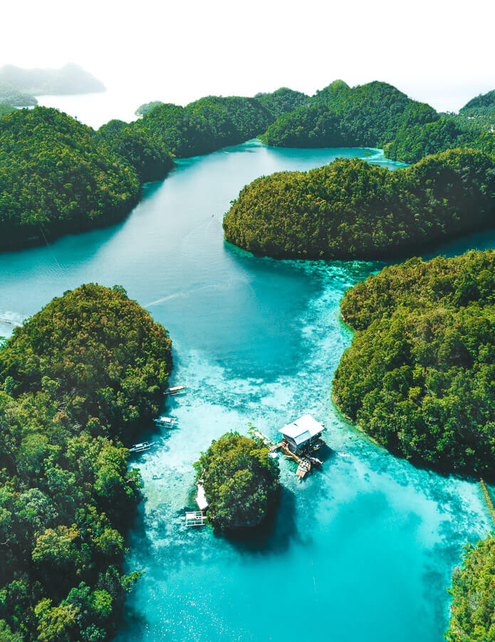
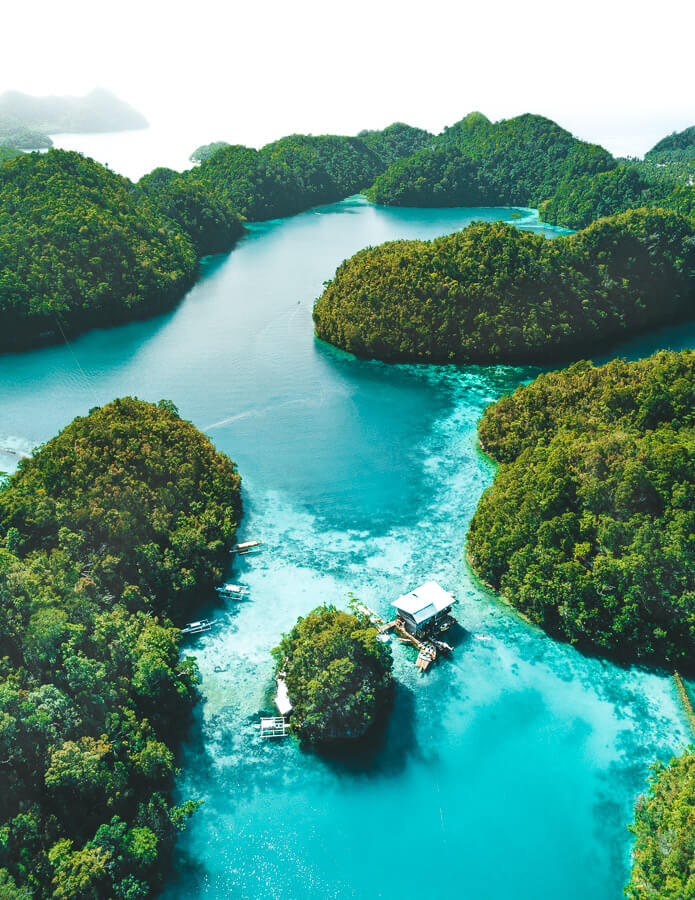

Siargao is known as the surfing capital of the Philippines, The coastline is marked by a succession of reefs, small points and white, sandy beaches. Thanks to its reliable surfing weather, it has become a great surfing spot for both veterans and beginners among its various surfing spots, Cloud 9 is considered the most popular of all. It has also gained worldwide recognition due to its thick, hollow tubes and fast-barreling right-hand waves that break over a reef.
 

© 2023 Kjieldsen Joy S. Esteban